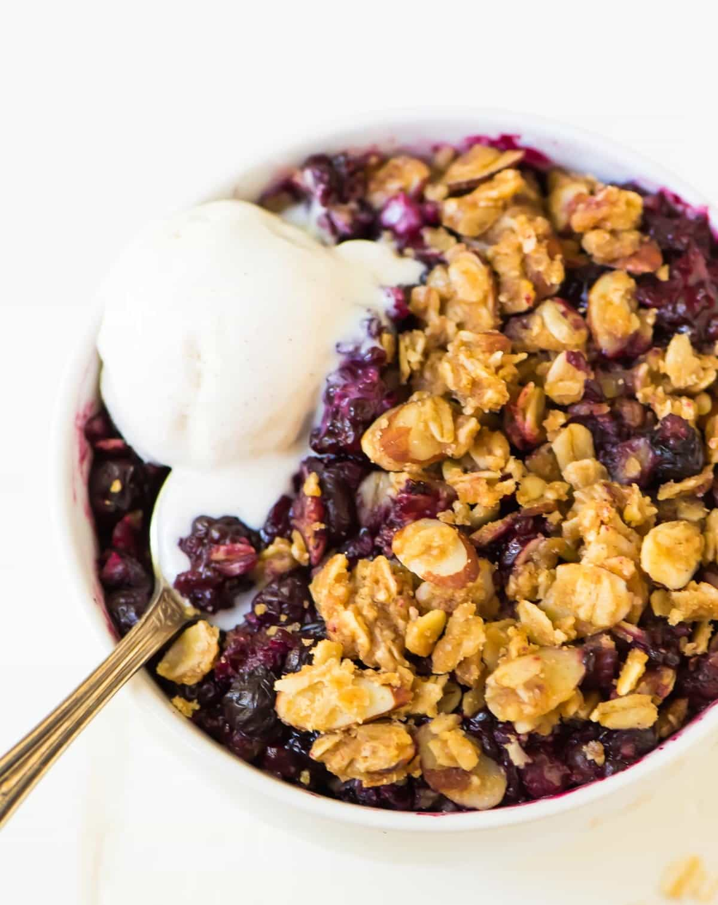

Triple Berry Crisp

Description
This is a wonderful berry crisp. I use a triple berry mixture of raspberries, blackberries, and blueberries, but just one works well too!
My family loves it! Serve it with whipped cream and it looks great.
Ingredients
- 1½ cups fresh blackberries
- 1½ cups fresh raspberries
- 1½ cups fresh blueberries
- 4 tablespoons white sugar
- 2 cups all-purpose flour
- 2 cups rolled oats
- 1½ cups packed brown sugar
- 1 teaspoon ground cinnamon
- ½ teaspoon ground nutmeg
- 1½ cups butter
Steps
-
Preheat oven to 350 degrees F (175 degrees C).
-
In a large bowl, gently toss together blackberries, raspberries, blueberries, and white sugar; set aside.
-
In a separate large bowl, combine flour, oats, brown sugar, cinnamon, and nutmeg.
Cut in butter until crumbly. Press half of mixture in the bottom of a 9x13 inch pan.
Cover with berries.
Sprinkle remaining crumble mixture over the berries.
-
Bake in the preheated oven for 30 to 40 minutes, or until fruit is bubbly and topping is golden brown.